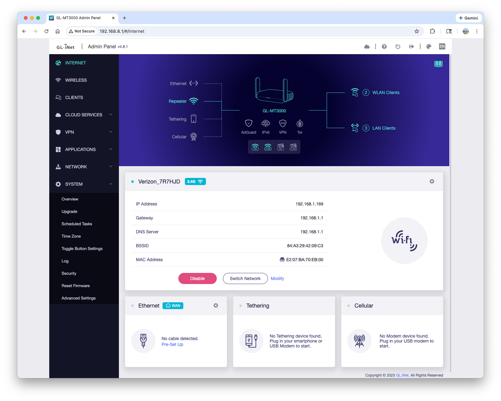
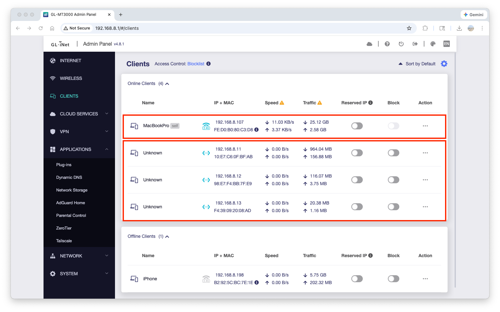
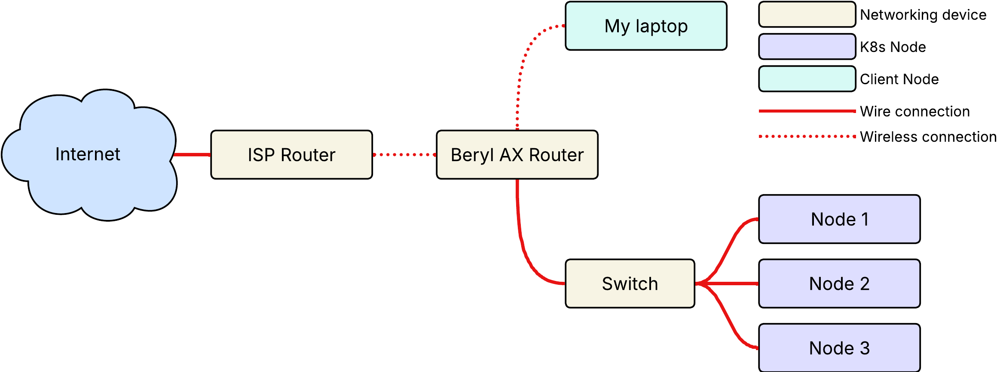
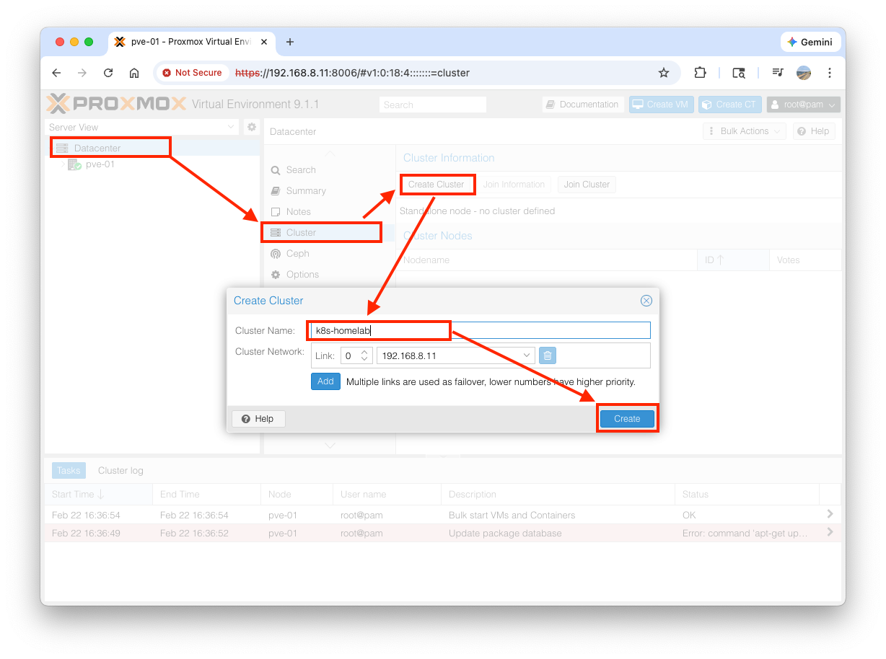
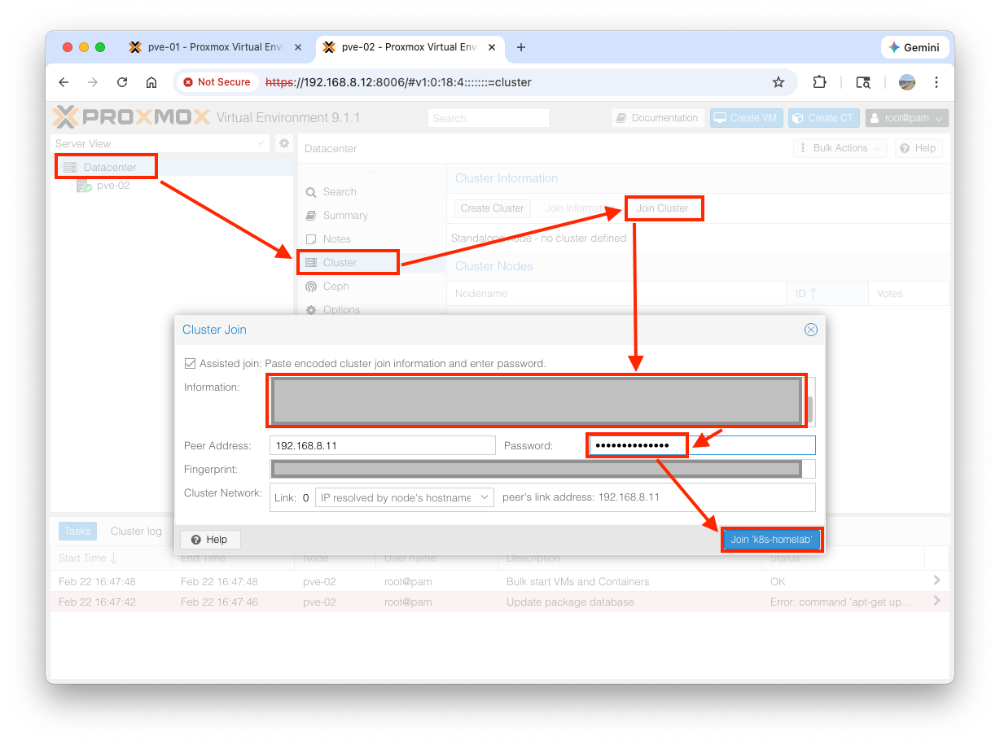
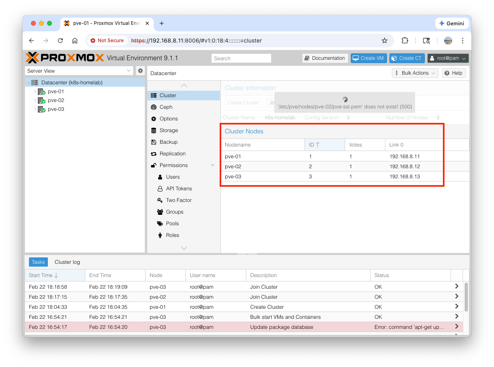
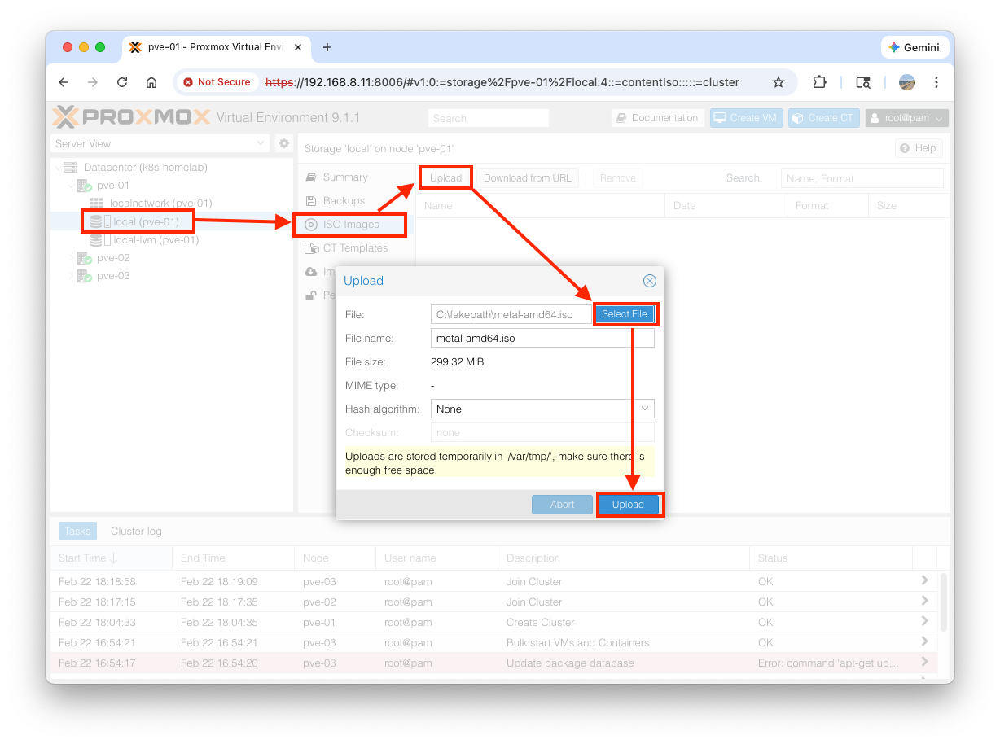
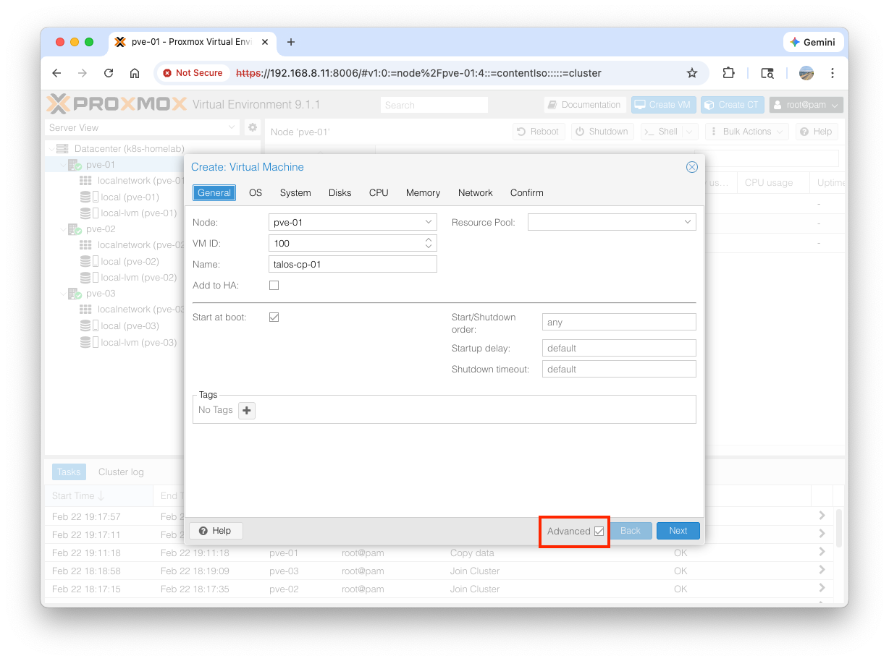
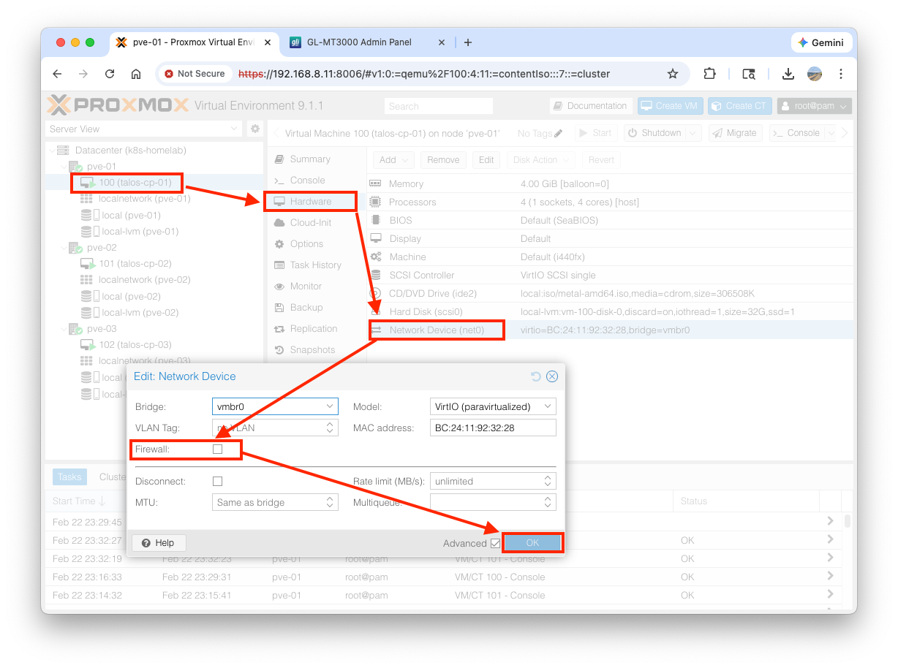
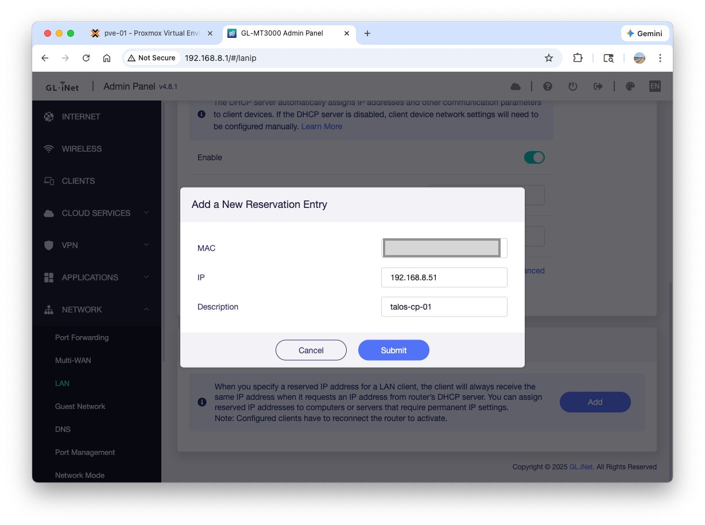

🏠 Kubernetes Homelab Guide
📖 Introduction
Welcome to my Kubernetes Homelab repository. This project documents the journey of building a bare-metal Kubernetes cluster at home.
Goal: To create a highly available cluster using GitOps principles to host personal services.
🛠 Tech Stack
- Hypervisor: Proxmox VE - Type-1 Hypervisor for managing virtual machines and resources.
- OS: Talos Linux - A modern, security-focused, and immutable operating system built specifically for Kubernetes.
- Provisioning: Terraform / OpenTofu - Infrastructure as Code to automate Proxmox VM creation.
- Management:
talosctl- CLI tool for managing the Talos nodes and cluster configuration.
🚀 Getting Started
Prerequisites
- K8s nodes: three or more k8s worker machines for running containerized applications. Any desktops or laptops would be fine.
- Switch: creating a local network for k8s nodes and allowing them to communicate via ethernet cables. You don't necessarily need it if your nodes have wifi capabilities.
- Router: connecting the local network(k8s nodes and your main desktop or laptop) to the internet, working as a Gateway where Network Address Translation happens from the perspective of k8s nodes.
- USB: to store the Proxmox Virtual Environment ISO. K8s nodes will boot from it.
Below is the list of what I actually bought for this project.
- HP EliteDesk 800 G3 Mini Intel i5-7500 3.40Ghz 16GB RAM 256GB
- 90W AC Adapter Power Supply For HP EliteDesk Desktop Mini 705 800 G1 G2 G3 P
- GL.iNet GL-MT3000 (Beryl AX) Portable Travel Router
- TP-Link TL-SG105, 5 Port Gigabit Desktop Switch
- Ethernet Cable Pack
- 128GB Dual USB
Deployment Steps
1. Set up the router
Follow the official user guide. The key parts are:
- Power on
- Connect your laptop to the router via wifi
- Log in to the Beryl AX router web UI(http://192.168.8.1)
- Connect the Beryl AX router to the ISP's router using either Ethernet or Repeater. I select the "Repeater" mode because the Beryl AX router is located in the second floor while the ISP's router in the first floor.
The successful setup would look like below:

{kind=link}
2. Connect k8s nodes to the router
Connect each k8s node and the Beryl AX router to the switch using the ethernet cable. Please refer to my setup below:

The k8s nodes being connected, go to the Beryl AX router web UI > Clients. You will see your laptop and k8s nodes appear on the list:

{kind=link}
The current network topology should look like below:

{kind=link}
3. Create Bootable Proxmox VE USB
- Download the latest Proxmox VE ISO.
- Download a flashing tool like BalenaEtcher or Rufus.
-
Insert your USB drive and flash the ISO using the tool.
- click Flash from file and select the downloaded Proxmox VE ISO file.
- click Select target and select your USB
- click Flash
{kind=link}
4. Install Proxmox VE on k8s nodes
- Plug the USB into your k8s node, boot into BIOS(
F2in my case), and set the USB as the primary boot device. -
Follow the Proxmox installation wizard to set up the hypervisor on each node.
In
Management Network Configurationpage, enter the following value for each entry: - Hostname (FQDN): - node 1:pve-01.local` - node 2:pve-02.local- node 3: ``pve-03.local- IP Address (CIDR): - node 1:192.168.8.11/24- node 2:192.168.8.12/24- node 3:192.168.8.13/24- Gateway:192.168.8.1- DNS Server:192.168.8.1 -
After all the install process is done, you will see the following on your screen. You don't need to log in at this point. Move on to the next node and repeat the install process.
5. Create the Proxmox Cluster
To manage all three physical nodes from a single interface, we will join them into a Proxmox Datacenter cluster.
1. Open your browser and navigate to the UI of your first node: https://192.168.8.11:8006 (Bypass the SSL warning).
1. Log in with the username root and the password you created during installation.
1. In the left navigation pane, click on Datacenter.
1. In the middle pane, navigate to Cluster and click Create Cluster.
1. Name the cluster (e.g., k8s-homelab) and click Create.
Join Information first and the Copy Information button.

{kind=link}
Join the other nodes:
1. Open new browser tabs for  https://192.168.8.12:8006 (pve-02) and https://192.168.8.13:8006 (pve-03).
1. Log into each, navigate to Datacenter -> Cluster, and click Join Cluster.
1. Paste the Join Information string you copied from pve-01. Enter the root password for pve-01 and click Join.
{kind=link}
{kind=link}
6. Download the Talos Linux ISO
Before creating the virtual machines, Proxmox needs the Talos operating system image stored locally.
- Get the latest Talos ISO link. Go to the Talos GitHub Releases page, find the latest version, and copy the link for the
metal-amd64.isofile. - In your Proxmox UI (pve-01), expand the
pve-01node on the left panel. - Click on the
local (pve-01)storage drive. - In the middle pane, select
ISO Images. - Click
Upload, select the downloaded Talos ISO file, and clickUpload.
- Repeat the same process for
pve-02andpve-03.
{kind=link}
7. Provision Talos VMs
We will create one VM on each of our three physical servers (pve-01, pve-02, pve-03) to ensure high availability.
Step 7.1: The VM Wizard
- Log into your Proxmox UI (
https://192.168.8.11:8006). - In the top right corner, click the blue
Create VMbutton. - Follow these exact settings through the wizard. Before moving forward, check
Advancedoption at the bottom to open up the advanced options on each tab:
- General Tab
- Node:
pve-01 - VM ID: Leave as default (e.g.,
100) - Name:
talos-cp-01(cp stands for control-plane) - Start at boot: Check this box.
- Node:
- OS Tab
- ISO image: Select the
metal-amd64.isoyou downloaded earlier. - Type:
Linux - Version:
6.x - 2.6 Kernel
- ISO image: Select the
- System Tab
- Leave everything as default. (Do not check QEMU Guest Agent; Talos handles this natively later).
- Disks Tab
- Storage:
local-lvm - Disk size (GiB):
32 - Advanced: Check SSD emulation and Discard (this is important for the physical SSD's health).
- Storage:
- CPU Tab
- Cores:
4(Passes all 4 cores of the physical CPU to the VM for maximum scheduling performance). - Type:
host(This exposes the actual CPU architecture to Talos, drastically improving cryptographic and networking speeds).
- Cores:
- Memory Tab
- Memory (MiB):
4096 - Advanced: Uncheck Ballooning Device. (Kubernetes needs guaranteed memory; ballooning can cause out-of-memory crashes).
- Memory (MiB):
- Network Tab
- Bridge:
vmbr0 - Model:
VirtIO (paravirtualized)(Fastest networking standard).
- Bridge:
- Confirm Tab
- Click
Finish
- Click
- General Tab
{kind=link}
Step 7.2: Repeat for Node 2 and Node 3
Repeat the exact same wizard two more times to create the other two nodes.
- Create talos-cp-02 on the pve-02 node.
- Create talos-cp-03 on the pve-03 node.
Step 7.3: Disable the Proxmox VM Firewall
talos-cp-01>Hardware> Double-click onNetwork Device (net0)- Uncheck
Firewalland clickOK
- Repeat this process for
talos-cp-02andtalos-cp-03
{kind=link}
Step 7.4: Gather the MAC Addresses and DHCP Lease
Before turning the VMs on, we need to know their hardware network addresses so we can tell our Beryl AX router to assign them permanent, static IP addresses.
- Click on
talos-cp-01in the left menu. - Go to
Hardwarein the middle menu. - Double-click on
Network Device (net0). - Copy the
MAC address(it looks likeBC:24:11:XX:XX:XX). - Repeat this for
talos-cp-02andtalos-cp-03and write them down. - Log into your GL-MT3000 (Beryl AX) router web UI at
http://192.168.8.1. NETWORK>LAN>Address Reservation>Add- You will be prompted to enter a MAC address and an IP address.
- MAC Address: Paste the MAC address you copied from
talos-cp-*in Proxmox. - IP Address:
talos-cp-01:192.168.8.51talos-cp-02:192.168.8.52talos-cp-03:192.168.8.53
- Description:
talos-cp-*
- MAC Address: Paste the MAC address you copied from
{kind=link}
The router is now strictly instructed to intercept any DHCP requests from those specific virtual network cards and hand them those exact IP addresses.
8. Install Talos CLI
Install talosctl with the following command:
# mac os or linux
brew install siderolabs/tap/talosctl
# windows
curl -sL https://talos.dev/install | sh
Once it is installed, you can verify it is ready to go by typing talosctl version in your terminal:
9. Generate/Edit Cluster Configuration
Generate the configuration files that tell Talos how to build your cluster. Use the Virtual IP (VIP) designated for your Control Plane: 192.168.8.60. Run the following command:
This will generate three files in your current folder:
- controlplane.yaml: The configuration you will apply to your three Proxmox VMs.
- worker.yaml: The configuration for any future worker nodes you might add.
- talosconfig: The credentials file your laptop uses to securely connect to the cluster.
Edit controlplane.yaml file to have the below network: block:
10. Boot the Virtual Machines
- Go to your Proxmox Web UI (
https://192.168.8.11:8006). - Right-click on
talos-cp-01,talos-cp-02, andtalos-cp-03and select Start. - Open the Console tab for one of them.
You will see the Talos OS boot up and eventually pause, displaying a message that it is in "maintenance mode." It will also print its IP address (which should be your static IPs: 192.168.8.51, .52, or .53).
{kind=link}
11. Apply the Configuration
Now we inject the controlplane.yaml file into each node. Because the nodes are brand new and don't have cryptographic certificates yet, we use the --insecure flag for this very first push.
Run these three commands from your laptop's terminal:
talosctl apply-config --insecure --nodes 192.168.8.51 --file ./config/controlplane.yaml
talosctl apply-config --insecure --nodes 192.168.8.52 --file ./config/controlplane.yaml
talosctl apply-config --insecure --nodes 192.168.8.53 --file ./config/controlplane.yaml
Note: After receiving the file, the nodes will automatically reboot, apply the configuration, and start pulling the Kubernetes container images.
12. Bootstrap the Cluster
- Run the following command to trigger the bootstrap process on your first node:
- Download
kubeconfigfrom the cluster and save them toconfigdirectory - Run the test command
It will return nodes info:
NAME STATUS ROLES AGE VERSION
talos-1jp-5xx Ready control-plane 21m v1.35.0
talos-7cb-oml Ready control-plane 21m v1.35.0
talos-ogq-rdt Ready control-plane 21m v1.35.0
13. Make kubeconfig/talosconfig Global
Run the following commands:
mkdir -p ~/.kube
cp ./config/kubeconfig ~/.kube/config
mkdir -p ~/.talos
cp ./config/talosconfig ~/.talos/config
Verify global access: